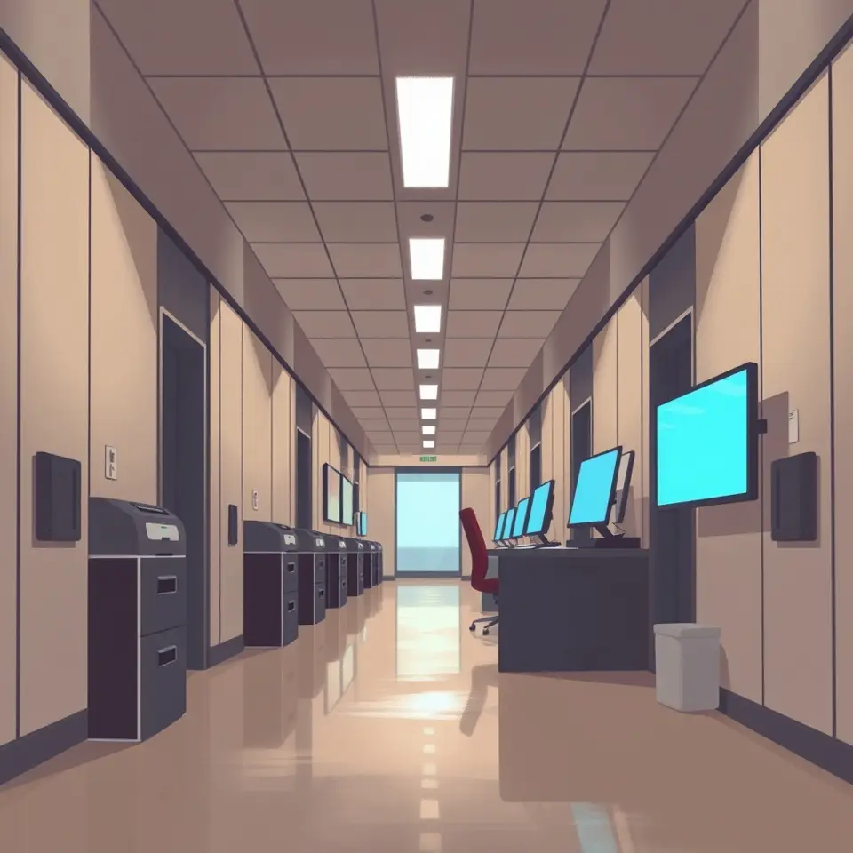

정진완 우리은행장 연임…임기 1년 연장, 과제는 여전
우리은행이 정진완 행장의 1년 연임을 확정했으며, 수익성과 리스크 관리가 향후 숙제로 꼽힌다.

핵심 정리
- 정진완 행장 연임, 임기 1년 연장
- 자본비율·디지털금융 성과 거론
- 금융사고와 수익성 격차가 과제
우리은행이 정진완 행장의 연임을 확정하면서 임기가 1년 연장됐다. 이번 결정은 5대 금융지주 은행장 인선의 흐름을 보여주는 사례로도 해석된다.
연임의 배경으로는 자본비율 관리와 디지털금융에서 거둔 성과가 거론됐다. 반면 금융사고 문제와 경쟁 은행 대비 수익성 격차는 해결해야 할 과제로 남았다.
보도 초점은 매체마다 달랐다. 일부는 연임 결정 과정과 인선 신호에 무게를 두었고, 다른 보도는 금융사고와 수익성 격차를 짚으며 연임 이후의 경영 부담을 강조했다.
향후 임기 동안 수익성 개선과 내부통제 강화가 어떻게 추진될지가 관전 포인트로 꼽힌다.
이 소식을 다룬 보도
- 정진완 우리은행장 연임…임기 1년 연장인베스트조선